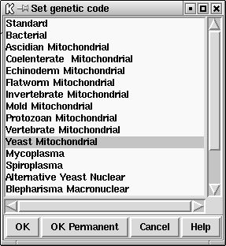

This function allows the user to change the genetic used in all the options. The codes are defined as a set of codon tables stored in the directory tables/gcodes distributed with the package. The current list of codes and their codon table file names is shown at the end of this section.
The user interface consists of the dialogue shown below. The user selects the required code by clicking on it, and then clicking "OK" or "OK permanent". The former choice selects the code for immediate use, and the latter also selects it for future uses of the program.

When the dialogue is left the codon table selected will be displayed, as below, in the Output Window.
===============================================
F ttt S tct Y tat C tgt
F ttc S tcc Y tac C tgc
L tta S tca * taa W tga
L ttg S tcg * tag W tgg
===============================================
L ctt P cct H cat R cgt
L ctc P ccc H cac R cgc
L cta P cca Q caa R cga
L ctg P ccg Q cag R cgg
===============================================
I att T act N aat S agt
I atc T acc N aac S agc
M ata T aca K aaa G aga
M atg T acg K aag G agg
===============================================
V gtt A gct D gat G ggt
V gtc A gcc D gac G ggc
V gta A gca E gaa G gga
V gtg A gcg E gag G ggg
===============================================
The following table shows the list of available genetic codes and the files in which they are stored for use by the package. They were created from genetic code files obtained from the NCBI.
code_1 Standard code_2 Vertebrate Mitochondrial code_3 Yeast Mitochondrial code_4 Coelenterate Mitochondrial code_4 Mold Mitochondrial code_4 Protozoan Mitochondrial code_4 Mycoplasma code_4 Spiroplasma code_5 Invertebrate Mitochondrial code_6 Ciliate Nuclear code_6 Dasycladacean Nuclear code_6 Hexamita Nuclear code_9 Echinoderm Mitochondrial code_10 Euplotid Nuclear code_11 Bacterial code_12 Alternative Yeast Nuclear code_13 Ascidian Mitochondrial code_14 Flatworm Mitochondrial code_15 Blepharisma Macronuclear